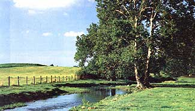
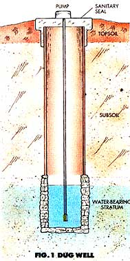
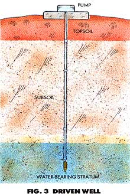

MOTHER'S HANDBOOK
How to make sure the land you're about to buy isn't a "water wasteland."
MOST PEOPLE BUY LAND IN THE spring and early summer when creeks are full, springwater is bursting from the hills and the meadows are green. In late August and September, the early buyer is often shocked to find that all of his water has dried up. If you have lived primarily in urban areas where water has always been just a turn of the tap away, you don't realize the work and expense involved in bringing water where you want it. Just to get running water into your house might involve installing a generator, pump, pipeline, holding tank and well. You might see land with a beautiful creek and not realize that it is too far away from the nicest building site to be of any value.
If there is no water visible on the land, you will be told that everyone in the area uses wells and that if you dig deep enough you will find water. The facts are that not all land has underground water, finding any is often difficult and drilling a well is expensive. A big creek or a good well on a neighboring property does not mean there is water on your land. Do not be fooled by such misconceptions.
Water sources are either on the surface or underground. Surface waters include rivers, streams, creeks, ponds, springs and cisterns.
Water is trapped underground in two types of areas: in aquifers, loose water-bearing materials such as gravel, sand and clay; or in consolidated water-bearing rocks, notably limestone, basalt and sandstone. In many cases, surface water sources are excellent for irrigation, livestock, fire fighting, ponds and other uses, but cannot be utilized for drinking. Therefore, a well is often a necessity regardless of the presence of surface water.
Rivers, streams and creeks. Rivers, streams and creeks differ primarily in size and length. Rivers are large watercourses, which are often navigable and public. You may find that you have to share your river with motorboats, water-skiers and swimmers.
Streams and creeks are much smaller than rivers and often do not flow continuously throughout the dry season, especially in the arid West. The only way you can tell if your stream or creek will flow year-round is to see it flowing during the driest part of the summer, usually August or September. Don't accept the word of a real-estate agent that a creek never goes dry. If a creek is your only year-round source of water, your activities will be limited by the amount of water in it during its lowest period.
Check with the local farm advisor, health department or U.S. Geological Survey office to see if the stream has ever been gauged, or measured. Talk to other people who live along the creek or stream to see what their experience has been.
Ponds. You might be lucky and find a parcel of land with a pond on it. If you do, find out the source of the water that feeds it. If a creek or spring feeds the pond, make sure the flow is sufficient to keep the pond full year-round. If the pond is a good one, it is worth the extra money you will pay for the land.
It is much more likely a real-estate agent will show you a possible "pond site" rather than a pond. He might show you some springs or creeks that could be used to feed a man-made pond and tell you that the site has already been researched. Never assume a pond can be built unless a reliable source, such as a geologist, your local farm advisor or a Soil Conservation Service agent, investigates the site and determines its feasibility as a pond site. Building a pond requires heavy-duty equipment, expensive building materials and possibly a system to divert water to the pond from a water source.
Springs. In many areas, springs are the primary source of water. A spring occurs where water seeps to the surface from a crack in the rock formation or where a road cuts through a water vein. Artesian wells are like springs, except that the water is forced up by underground pressure. Often a spring will be only a tiny trickle of water coming out of a hillside. Don't underestimate its value until you measure its rate of flow. If a spring produces one gallon of water a minute, which looks like a trickle, it produces 1,440 gallons every 24 hours. If you have a large holding tank to collect the water as it flows to the surface, this amount could support a small homestead. When you are looking at land with springs, take along a gallon jar, and measure the flow per minute using a watch with a second hand. Multiply this amount by 60 to get the flow per hour, then multiply that result by 24 to get the flow per day. Of course, you will have to see the spring during the driest part of the year to be certain that the flow is still sufficient for your needs.
Cisterns. Cisterns are large circular or rectangular storage tanks either completely open at the top to collect rainwater or open only enough to allow a pipe to enter and bring in water from roofs or fields. They are made of cement, wood or metal. The collected water is rarely used for drinking due to the possibility of contamination. However, it can be used for swimming and irrigation.
Wells. Eighty percent of rural water in the United States comes from underground sources and is pumped to the surface through wells. Underground water, or groundwater, is preferred for drinking because it is purer than surface water. Groundwater can be brought up at any point and thus obtained close to where you need to use it. Because surface water flows away swiftly and is subject to tremendous evaporation, the fluctuation in a stream or creek varies more than the steady supply of groundwater. The primary difficulty with a well is the high cost of digging, casing and sealing it and the necessity for a pump to bring the water to the surface.
There are several different types of wells. The oldest is the dug well (Fig. 1). Usually three to four feet in diameter, it is dug with a pick and shovel to a maximum depth of 50 feet. These wells are dangerous and painstaking to dig, and they often go dry because they are so shallow. Their main advantage is the large storage area, but this permits contamination more easily than other wells because of seepage through the well walls and from the large opening on top. Dug wells are probably more common in Canada these days than in the United States.
Bored wells are similar to dug wells except that they are often deeper and smaller in diameter. An auger bucket, either power- or hand-operated, is used to dig these wells, which often run to 100 feet and are cased all along the inside wall. The bored well is practically obsolete today because of the more efficient driven and drilled wells.
Jetted or hydraulic wells can be drilled only in soft, sandy soils such as those found in some coastal areas. The well is drilled by applying a high-pressure stream of water that cuts through the earth and washes it out of the hole. As this is done, a 1 1/2-inch pointed jetting tool is shoved down into the loose sand as far as it will go, and when it stops the well is complete. This method is useless if rock or clay is reached.
To produce a churn, spud or percussion-tool well, a large chisel-shaped bit is pounded into the ground over and over again by lifting it high into the air and dropping it. With each fall, the bit digs deeper into the ground. During this process, water is poured into the developing hole to transform the loosened dirt into mud, which is then drawn out of the hole. It takes a long time to drill a well in this manner, but it is still effectively done by commercial drillers.
Drilled wells are the most common kind of wells being used today. The drill has a sharp cutting bit on the end, and the shaft is hollow. As the drill turns into the earth, water is forced down into the drill stem, and the pressure of the water sends the cut dirt and rock to the top of the hole. As the drill goes deeper into the ground, additional sections of stem are screwed on to increase the length of the drill. (See Fig. 2.)
A driven well is usually cheaper to construct than a drilled well. Pipe sections several feet long are screwed together with a sharp well point and screen on one end. The pointed end is pounded into the ground until it reaches below the water-table level and a sufficient amount of water can enter the well through the screen. The ground must be quite soft to take a driven well, since hard rock and clay cannot be penetrated. The depth is limited to a maximum of 50 feet, and only a small flow of water will be attained. As with all wells, a driven well may be cut into the earth either horizontally or vertically. (See Fig. 3.)
If you look at land that has a well on it, you should ask the seller to show you any records he has indicating the amount of water pumped at various times of the year. Examine his pumping setup to see if it is in good condition. Does it need a new pump or motor? Ask him to start up his pump and watch it operate for a few hours. Does the well need to be dug deeper to get a larger flow to meet your intended needs? Remember that the depth and size of a well do not necessarily coincide with its capacity to yield water.
Ask the seller what brand of pump he is using and what its capacity is. How old is the equipment, and when was it installed? Who drilled the well? Go to the well driller, and ask to see the drilling log or driller's report to read what information he has regarding the quality of the well and its capacity. Sometimes a driller will not show you this document without the owner's permission. If the seller will not grant you permission to inspect the report, you should be suspicious of the quality of the well.
A drilled well can go to 1,000 feet, at a cost of $15 per foot!
The cost of drilling a new well is based on the depth of the well in feet, the toughness of the earth, and the accessibility to the area. The usual cost for drilling into hard rock under normal conditions is $10 to $20 a foot, although this figure could vary greatly depending on the area and the competition among drillers. If you reach water before hitting rock, the price is usually cut in half. A drilled well can go to a depth of 1,000 feet. You can find out the normal well depth in your area from the local well driller and thus estimate the approximate cost to you. In our area, wells are between 150 and 300 feet deep. At $15 per foot, a well can cost from $2,250 to $4,500. Drilled-well construction includes lining the inside of the well with a steel or plastic casing to protect it from contamination and collapse, and pouring a concrete or grout seal around the top.
It's important to remember that there is always a chance you will not hit water. No driller is going to guarantee water when he starts drilling. He just tells you his price per foot and then drills until he hits water or you can't afford to pay for another foot. You can pay several thousand dollars for a dry hole, and that is one of the biggest risks of buying country land. Even in areas where water is plentiful, drilling is successful only about 85% of the time. The people representing the other 15% are simply out of luck and money. You must be certain there is water before you buy.
Ninety percent of all water beneath the surface of the ground occurs in the top 200 feet, and the average depth of all domestic water wells in the United States is slightly less than 50 feet.
Groundwater exists only in the area called the zone of saturation . This is the area beneath the ground in which all the openings and pores in the soil, sand, gravel or rock are filled with water. Developing a well involves drilling a hole into the zone of saturation, which allows water to drain by gravity from the saturated earth into the well, where it is pumped up to the surface and replaced by other water flowing toward the well. The rate at which this new water moves into the well, called the recharge rate, determines the amount that can be withdrawn at any one time. Thus you will want to know not only if there is underground water present but also its quantity and rate of flow. The total groundwater in an area is replenished every year by new precipitation, which controls the amount of water present in the zone of saturation. It is estimated that 95% of the total fresh water available is groundwater.
One method used to locate underground water is to find those plants, called phreatophytes, that exist only when their root systems can reach the water table. (The name phreatophyte is derived from two Greek words meaning "well plant.") Some phreatophytes indicate not only the presence of groundwater but also the quality and approximate depth of the water below the surface. For instance, in arid regions willows or cottonwood trees, as well as elderberry shrubs (Fig. 4) and rabbit-brush (Fig. 5), usually mean that good water is available within 10 to 20 feet of the surface. Some species of birch, maple, sycamore, alder, bay and live oak also indicate groundwater at shallow depths. Mesquite (Fig. 6) suggests good water within 10 to 50 feet of the surface, and black greasewood (Fig. 7) indicates mineralized water within 10 to 40 feet.
Unfortunately, the value of such plants as indicators is reduced in humid regions where there is an abundance of water in the soil. Each area of the country has its own phreatophytes. Your local well driller, farm advisor, agriculture experiment station or other advisory agency will know the ones to look for in your area.
Another ancient method still used to find water is witching , or dowsing , with a divining stick or rod. As far back as the sixteenth century, farmers walked across their land carrying a forked branch in front of them waiting for it to point down to the ground over a water source. A forked or straight twig from a peach, willow, hickory, dogwood or cherry tree is the most common tool used by diviners. The twig is held between both hands facing out and up and is supposed to roll down or spin around when held over water. Almost every rural area has its well known diviners. Some work for free, and others charge a fee for their divining services. Some claim to be able to tell which way the water flows and how deep it is by the movement of the divining rod. However, the U.S. Geological Survey has concluded that not one scientifically conducted experiment using water witches to locate optimal sites for water-well location has ever yielded conclusive, reproducible support for water witches' claims. I would not buy land solely on the basis of their findings, but they might confirm some other appraisals made by a well digger or farm advisor.
In farming communities, nitrates from fertilizers may pollute the groundwater.
If water is declared potable by the county health department, it is safe to drink. The safety is determined by examining the water at your source and the conditions around it. You will probably not be surprised to know that animal manure and soil bacteria are usually harmful to a water supply. Human sewage and poisonous sprays are the primary causes of contaminated water.
In heavily fertilized areas, such as farming communities, nitrates from decomposed ammonia fertilizer infiltrate the groundwater and pollute it. Nitrate-rich water leads to a serious disease in infants known as blue babies (methemoglobinemia).
Animal feedlots provide a huge volume of waste compared with their size. For example, a 10-acre feedlot with 1,000 head of cattle produces waste equivalent to that of a town of 6,000 people. If you are considering buying in a farming or livestock area, always have the available drinking water tested before you purchase property there.
If you are looking at land that is in a floodplain, and if there are several other homes in that floodplain that use septic tanks and wells, it is very possible that the effluent from the septic tanks will pollute the groundwater. Check with the local health officials to see if there are periodic outbreaks of hepatitis due to an increase in coliform bacteria during times of high water.
Drinking or smelling water will tell you nothing about its portability, since even clear, good-tasting water may be contaminated. However, your local county health or sanitation department will gladly conduct a free or inexpensive water analysis for you. A health inspector will come out to collect the sample and to examine the source and surrounding area.
The basic water test includes a coliform bacterial count, which reflects the amount of human and other warm-blooded-animal excreta in it. If you want a more complete mineral and bacterial analysis, which is not usually necessary, you will have to pay to have it done by a commercial laboratory.
I recommend that you always get the basic water test done, no matter what the history of the drinking water on the land. The family living there may have been drinking the water for 50 years, but pollution can occur virtually overnight.
You might also want to check the surrounding area for other forms of groundwater pollution, especially if there are any industries located in your area. More and more we are finding that toxic substances have been improperly stored and are leaking into the groundwater.
If you are looking at undeveloped land, you must determine its suitability for a water supply system. The water supply system is the means by which you get the water from its source to your house, garden, trees, fields and animals. The standard equipment includes pipe or hose, one or more holding tanks, a pump house and various pieces of hardware such as valves and faucets. If you are looking at land that already has a developed water system, you will want to know if it was well designed and built and if it is still working properly.
A bath can consume as much as 40 gallons, a shower, 30.
Setting up a new system can cost thousands of dollars. Before you buy land, estimate the costs required to develop a new water system or repair an existing one. If the expense is beyond your means, do not purchase the land.
Gravity-Flow System. The cheapest and easiest way to bring water where you need it is by using the force of gravity. To do this the water source must be higher in elevation than the place to which you want to bring the water, so that when you lay your hose or pipe the water will flow freely of its own accord to the lower point. However, because air is lighter than water, the hose between the two points must drop steadily downhill, or air bubbles will collect in the high spots of the hose and slow down or stop the flow of water. If you cannot avoid laying the hose over a high spot, you can prevent air from entering it by putting in valves for bleeding the lines or by keeping both ends of the hose constantly submerged in water.
If a hill is situated above a building site but you cannot find a spring or other water source in it, you might consider drilling a horizontal well into the side of the hill to get water to flow without using a pump. Ask a well driller to appraise the possibility of finding water this way on land you might buy.
The only materials needed to set up a gravity-flow water system are a holding tank, which might be a spring box, lake, pond or dammed-up portion of a creek; the necessary pipe or hose; storage tanks; and various valves, faucets and other hardware. This system is the cheapest and easiest to maintain because no pump is necessary.
Siphon System. The siphon system is similar to the gravity-flow system in that the source must be higher than the point to which you eventually want to bring the water. However, any rise in the ground that is higher than the source requires siphoning to get the water to flow over it. This is done by sucking the water up over the rise and far enough down the other side so that it begins to flow of its own accord. As long as you don't lose the siphon, the water will continue to flow. Every time the siphon is broken by air getting into the hose, you must suck the water to get it going again. You can use the same methods to prevent air from entering the hose as you would use in the gravity-flow system. The difference between these two systems is that in a pure gravity-flow system, none of the high spots in the hose are higher than the source, so no sucking is required to start the system.
Pump System. Unless you are fortunate enough to have a source positioned so that the water will flow by a gravity or siphon system, you will need a pump. The most common pump used for shallow wells and surface-water sources is the gasoline-powered centrifugal pump which sucks water up and pushes it out with great force. A two-horsepower pump of this type can suck the water to a height of only about 20 feet. However, if you can place the pump at the source, say along a stream or pond, it can push the water several hundred feet up a bank or hill.
If your source of water is a deep well, you will need an electric pump. The one-horsepower electric jet pump can suck up water from a maximum depth of 110 feet. However, the electric submersible well pump is more commonly used today. It is a long cylindrical pump that is placed at the bottom of the well, and it can push water up 450 feet. A one-horsepower submersible pump can push 10.2 gallons of water per minute up from 220 feet down.
Since these pumps require electricity, you will have to either bring it in or supply it by means of a generator. The most common generators are powered by gasoline or diesel fuel. There are also wind generators that look like windmills, and they produce electricity that recharges a set of storage batteries. If wind conditions are suitable, you can run an electric pump using this system without the noise and pollution of a gas or diesel generator. You can also use a windmill to pump water directly from a source straight down, like a well.
Holding Tanks. Unless you have a lake, pond or other large natural body of water situated higher than your homestead area, you will need at least one holding tank in your water system to keep a large quantity of water available. The greater your water needs, the larger the tank will have to be. If you want to irrigate an orchard and garden or grazing fields for your animals, you will need a large tank. For instance, if you plan to have a half-acre garden, it will require the equivalent of one inch of rain, or about 11,350 gallons, every 10 days. If you want to water once every five days, you will need a tank that holds at least 5,675 gallons just to water your garden once.
If there is a holding tank on the land, determine its capacity to be sure it is large enough for your intended needs. To figure out the volume in cubic feet of a cylindrical tank, multiply the area of the base in feet by its height in feet. (The formula is 3.1416 x r 2 x h, where r is the radius of the base and h is the height of the tank.) The volume in cubic feet of a square or rectangular tank is figured by multiplying the length times the width times the height in feet. Once you get the volume in cubic feet, you have to transform the result into gallons.To do this, multiply the number of cubic feet by 7.4805, which is the number of gallons in one cubic foot. For example, assume you have a cylindrical tank with the following dimensions: The height is 10 feet, and the diameter of the base is 12 feet. Thus the radius is six feet. Plugging these numbers into the formula, we get 3.1416 x 6 2 x 10=3.1416 x 36 x 10 = 3.1416 x 360 = 1,130.98 cubic feet. To translate this figure into gallons of water, multiply 1,130.98 x 7.4805 = 8,460.30 gallons.
Ideally, you'll have a water supply guarantee in the Contract of Sale.
Your land can have the most beautiful view in the world, but without water it is basically useless. Never buy land without a written guarantee that a year-round source of water exists that is sufficient to meet your needs. If the water dries up after you buy the property, the seller will be liable for a breach of this warranty.
If a visible water source exists on the land, include a clause in the Contract of Sale such as this one: "The Seller warrants and represents that as of the close of escrow the property will include a spring, well, creek or other water supply with a year-round output of at least_____gallons per_____."
If no water source presently exists on the land, you'll want to have at least a test drilling and preferably a completed, productive well drilled before, not after, you finalize your purchase. The ideal situation is to have the seller pay to drill the well, by including a clause in the Contract of Sale such as this: "The Seller shall make a diligent effort to locate and develop a year-round adequate water supply for the buyer's needs on the property. If necessary, the Seller shall drill a well to a maximum depth of________. The water supply must have a year-round output of at least'________ per minute. If the Seller cannot locate and develop an adequate water supply, then this agreement shall be terminated immediately, and all funds deposited and paid by the Buyer shall be returned immediately, and the Buyer shall suffer no further liability under this agreement."
If he locates a good water supply, he can add the price of the well to the purchase price. If he cannot locate water, you will not have to proceed with the purchase. If the seller resists such a condition, you can offer a compromise by agreeing to pay for half the drilling costs even if no water is found on the land. You should not agree to pay the entire cost if no water is found since, if you do, you could spend a few thousand dollars drilling a dry well on land you do not own.
Remember: Water is essential; without it, land is virtually worthless. Always take the time to examine property thoroughly for water sources, and carefully evaluate its potential for adequate water systems. Get a written guarantee that a dependable and adequate water supply exists. Then, and only then, you can proceed to purchase the land, confident that your homestead's water needs will be met.
Editor's Note: This article is excerpted from Finding and Buying Your Place in the Country, by Les and Carol Scher, a book long considered the most comprehensive and authoritative guide to purchasing rural property. Recently updated and expanded, the 566 page volume is available at most bookstores for $19.95. We recommend it highly.
|
 |
 |
 |
|
|
|
|
|
|
|
|